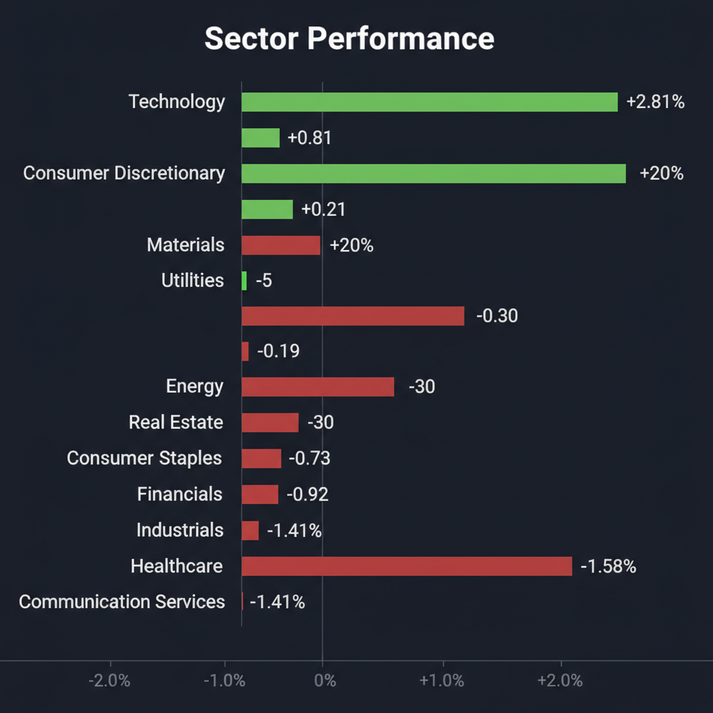
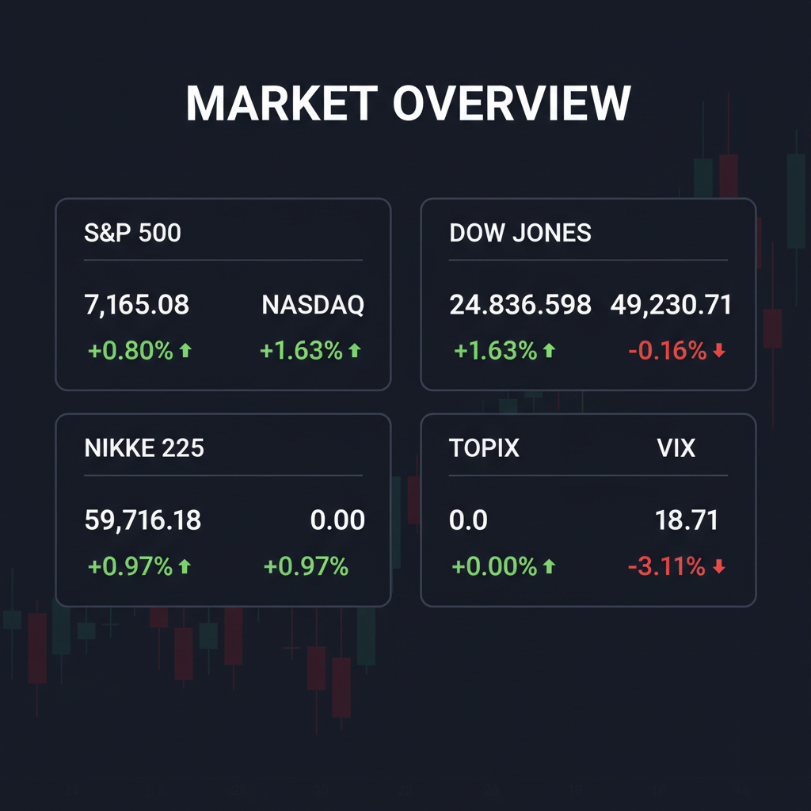

Daily Investment Report - 2026-04-25
Generated: 2026/4/25 7:23:26


投資チームミーティング 最終投資レポート
1. エグゼクティブサマリー
- 市場はAI・半導体主導で最高値圏にありますが、一部銘柄への極端な資金集中とVIX指数の不気味な低迷は、バブル末期の過熱感と相場の脆弱性を示唆しています。
- 中東の地政学リスクやFRBへの政治的圧力によるインフレ・高金利の長期化懸念がくすぶる中、大型ハイテク株の利益確定と現金比率の引き上げによるリスク管理が急務です。
- 今後の投資資金は、極端に過熱した大型株を避け、下値リスクが限定的な実力派の中小型バリュー株や、固有のカタリストを持つ中小型グロース株への選別投資へシフトすべき局面です。
2. 注目銘柄リスト
強気（買い推奨）
- PagerDuty (PD) [中小型]: アクティビストの介入によるコスト構造の適正化が期待され、売上成長至上主義から利益率重視へ転換することで、大幅な再評価（マルチプル・エクスパンション）の余地があります。
- VALUENEX (4422) [超小型]: 独自のビッグデータ俯瞰解析技術を持ち、AI進化に伴う企業のR&D投資の羅針盤として独自のポジションを確立しており、将来的なプラットフォーマーとしての飛躍が期待されます。
- 日本の実力派中堅建設株 [中小型]: 半導体工場やデータセンター特需を背景に実需が強固な上、低PER・低PBRで放置されており、株主還元強化をカタリストとした下値不安の少ないバリュー投資の王道です。
中立（様子見）
- DarkIris (DKI) [超小型]: プレミアムIPの買収とAIGCエコシステムの構築を目指すPIPE資金調達は評価できますが、高金利環境下でのキャッシュバーン（資金燃焼）と株式希薄化リスクへの懸念から、業績の推移を慎重に見極める必要があります。
- Baker Hughes (BKR) [中大型]: イラン情勢など地政学リスクを背景とした石油探査支出増の恩恵を受けますが、原油価格のボラティリティに業績が左右されやすいため、明確なチャートのブレイクアウトを待つべきです。
弱気（警戒）
- Spirit Airlines (SAVE) [小型]: 政府による買収救済の思惑でニュースになっていますが、巨額の有利子負債と構造的な赤字を抱えており、現在のマクロ環境では倒産リスクが極めて高い投機的銘柄です。
- J.フロント リテイリング (3086) [中大型]: 業績予想が市場の期待を裏切っており、インバウンド需要のピークアウトやインフレによるコスト増を価格転嫁しきれない「バリュートラップ」の典型となっています。
- 東京電力ホールディングス (9501) [大型]: フリーキャッシュフローが7期連続で赤字見通しとなるなど、ディスカウント・キャッシュフローの観点から企業価値の著しい毀損が警戒されます。
3. セクター推奨ランキング
- ハイテク株の高騰から逃避する「セクターローテーション」の受け皿として最適です。半導体工場建設などの実需があり、バリュエーション面でも魅力的な水準にあります。
- コモディティ価格上昇のコストを消費者に転嫁できる強力なブランド力（プライシングパワー）を持ち、インフレ環境下のポートフォリオの安定剤となります。
- 中東の地政学リスクや中国のレアアース支配に対抗するための西側諸国による供給網再構築（脱中国依存）により、長期的なインフラ・探査特需が期待できます。
- 実需は旺盛ですが、バリュエーションの過熱感と市場の幅（ブレドス）の悪化が深刻であり、テクニカルな反落リスクが高まっているためウェイトを引き下げるべきです。
- FRBへの政治的圧力等による高金利の長期化やインフレによる仕入れコスト増に対し、価格転嫁力が弱く、資金調達コストの増大が利益を直接圧迫します。
4. 今週の注目イベント
- 日米欧の中央銀行による金融政策決定会合（政策金利の据え置き観測と今後の利下げ・利上げ見通しの変化）
- 米国・個人消費支出（PCE）デフレーターの発表（インフレの粘着性の確認）
- 日本・有効求人倍率などの重要マクロ経済指標の発表
- イラン情勢に絡む米・イラン・パキスタン間での和平協議の進展および新たな制裁発動のヘッドライン
5. リスク要因
- ハイテク株のフラッシュクラッシュ・リスク: 極端に資金が集中しているハイテク銘柄への利益確定売りが連鎖し、指数全体を巻き込んだ急激なドローダウンを引き起こすリスク（テクニカルなベア・ダイバージェンスの顕在化）。
- スタグフレーション・ショック: イラン和平交渉が決裂し原油価格が急騰する一方、FRBが政治的圧力により適切な金融引き締めに動けず、インフレと景気後退が同時進行するシナリオ。
- 超小型株の流動性・資金枯渇リスク: 高金利環境下において、赤字や無配の中小型株が資金調達難に陥り、深刻な株式希薄化や倒産に追い込まれるリスク。
- 日銀の政策転換による急激な円高リスク: インフレ再燃により日銀が想定外の早期利上げに動いた場合、為替が円高に振れ、日経平均の強烈な調整トリガーとなるリスク。
6. アクションアイテム
- 買われ過ぎの水準にある大型ハイテク・半導体銘柄（Intel、Armなど）のポジションを直ちに縮小し、利益確定を優先する。
- 市場の急落（テールリスク）に備え、ポートフォリオの現金比率を通常の2倍〜3倍（最低30%目安）まで引き上げる。
- VIX指数の低迷を利用し、S&P 500やNASDAQに対するプットオプションを購入してダウンサイドのヘッジを構築する。
- 確保した資金の一部を、下値不安の少ない中小型バリュー株（日本の実力派建設株など）や、独自の再評価シナリオを持つ中小型SaaS企業（PagerDutyなど）へ少額分散投資する。